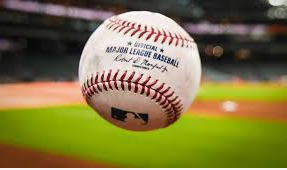
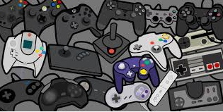
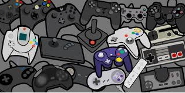

Joe Surgents HomePage

About Me
Hi my name is Joseph Surgent i am a 15 year old male that likes,Baseball,Wrestling,Memes,Video Games,hanging out with my freinds,and sleeping . In this class i would like to learn how to create a very good and smooth
running Website because that would be very cool and i would be very proud of myself for that


 

Now i have some stories about my favorite things.When i was in 7th grade i made the all star team for my little league we had lost our first game so we were in the losers bracket the next day we played the long branch team i did a great pitching job and really good hitting it was a tie game so we went into extra innings i was up with a man on 2nd down by 3 it was full count and bam i hit a homerun it was such a good feeling even though we went on to lose the game it was my last little league hit and it was awesome.In middle school i was on the wrestling team all three years and at the end of the year there was a big tournament in 6th and 7th grade i lost my first match to the kid who went on to win the tournament 8th grade was my last year to win in the tournament i was the 4th seed that year and i had to wrestle a kid who i had lost to earlier in the year if i won i would move on if i lost i'd be out of the tournament it was a very hard fought match because we were basically the same skill level and strenght at last i finally pinned him for the win i went on to get 4th place and i finally won a match in the tournament.I dont really havea story for memes but my favorite meme is the "oh keh" meme i like this meme because it is funny and it is easily used in any situation to get a good laugh.I really like video games because they are really fun and competitive they are also a good escape from whatever is annoying me at the moment or anything that i just need to get away from they are also something to get better and and i really enjoy playing them.one story i have about hanging out with my friends is when we play man hunt when we were younger and sometimes still today man hunt is when you get a group of people or your friends and split into two teams one team hides and one team seeks if you get tagged by the other team you go onto jail your team can tag you out of jail but its hard the seeking team wins by getting all the hidders onto jail the hidders win by all getting onto base i find this game very fun because i am very fast and its kind of easy for me.lastly i really like sleeping because its a good way to get back my energy and its very relaxing and it feels really good sleeping .my insta where you can see my homerun and me wrestling